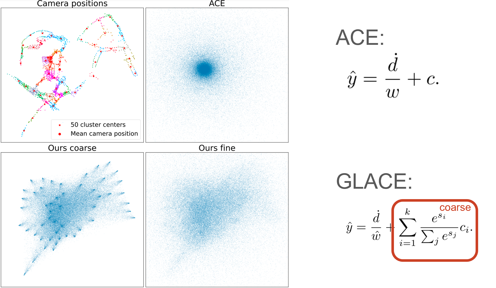

Method
Pipleine of GLACE: Besides the buffer of ACE local encodings, we extract global features of training images with image retrieval model R2Former. During training, we sample a batch of local encodings, look up their global encoding according to their image index and perform feature diffusion by adding Gaussian noise. The global and local encodings are concatenated as input to an MLP head. The output of the MLP is further processed by a position decoder to yield the final coordinate predictions. The global encoding with feature diffusion facilitates the grouping of reprojection constraints, enabling effective implicit triangulation in large-scale scenes.
SCR method cannot scale?
GLACE (27MB)
Simply using a larger network struggles to represent large areas. Existing methods split the scenes into small areas, which is less compact and may lead to suboptimal performance. GLACE allows us to accurately localize in large areas with a single network.
SCR as implicit triangulation
In SCR, each 2D observation independently regresses to a 3D point, the reprojection constraints might seem under-determined. Without Ground truth 3D supervision, why reprojection loss allows the network to learn meaningful 3D reconstruction? We argue that the smoothness prior of the neural network implicitly groups the reprojection constraints of similar input, which triangulate their output points.
Challenges in Large Scenes

However, in large scenes, unrelated yet visually similar observations exist. Robust loss can only mitigate the problem by triangulating only one of the 3D points and treating others as outliers.
Global encoding
Introducing global encoding from a pretrained image retrieval network resolves the global ambiguity. However, different views of the same point have distinct global encodings, leading to overfitting by placing arbitrary points along the ray instead of implicitly triangulating the 3D point.
Feature Diffusion
We propose a feature diffusion technique that simply adds Gaussian noise to the global encoding. This adjusts the strength of the smoothness prior on the global encoding and prevents the network from distinguishing covisible pairs while still resolving global ambiguity in non-covisible pairs. This can also be regarded as a kind of feature metric data augmentation. Unlike K-Means, feature diffusion requires no scene-specific hyperparameters.
Position Decoder

Despite improvements, the network still only well represents the scene near the center. We propose a novel position decoder that replaces the single mean with a weighted average of cluster centers, better parameterizing the multimodal output distribution.